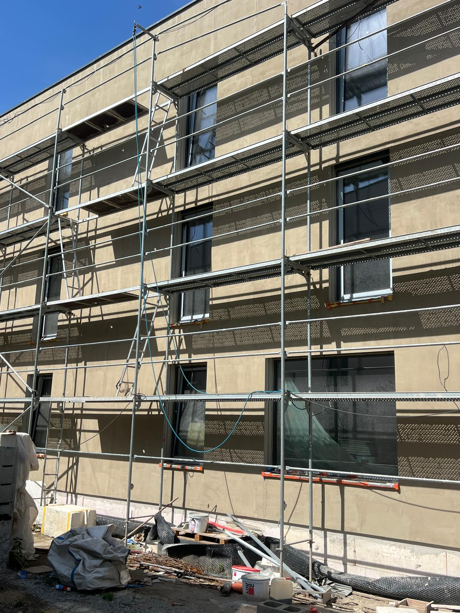
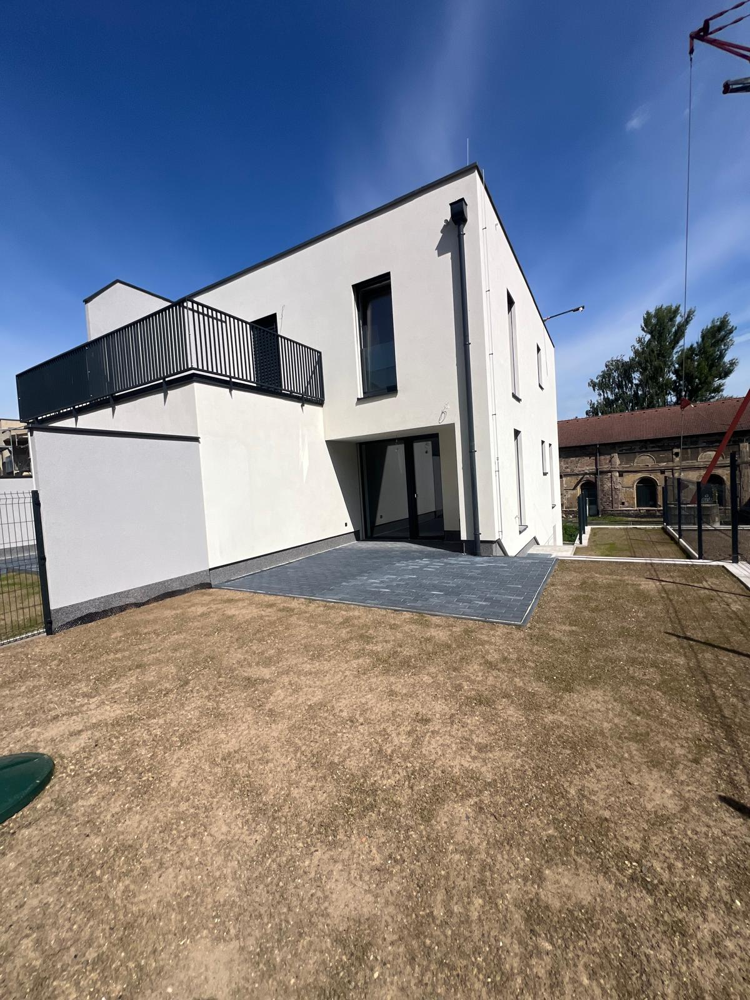
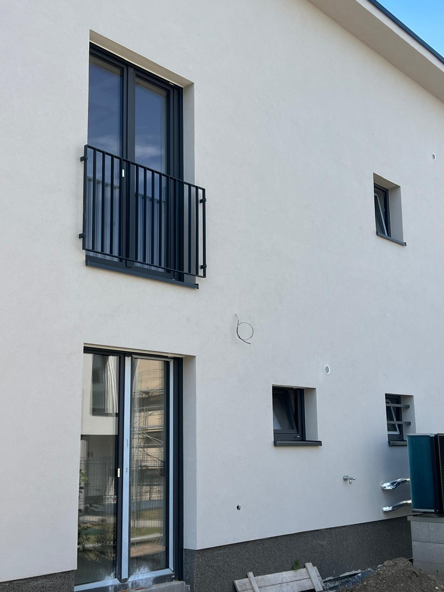

vápenocementové omítky Praha patří mezi dotazy, které zákazníci hledají ve chvíli, kdy už nechtějí obecné informace, ale konkrétní rozhodnutí. Často řeší termín, cenu, vhodný materiál, připravenost stavby a to, zda je lepší objednat specializovanou firmu nebo jednotlivé práce skládat z více dodavatelů. Tento článek vysvětluje téma prakticky, bez zbytečných frází a s důrazem na situace, které se na stavbách v Praze a okolí opravdu řeší.
Praktický výběr omítek pro vlhčí a více zatížené prostory rodinného domu. Text je určen hlavně pro majitele domů, kteří řeší koupelny, garáže, sklepy a technické místnosti. Pokud připravujete poptávku, doporučujeme číst článek společně s poznámkami ke stavbě, protože mnoho odpovědí závisí na ploše, stavu podkladu, přístupu a požadovaném termínu.
U omítek je kvalita vidět každý den. Rovinnost stěn, čisté rohy, správně zapravené špalety a dobrá návaznost na další práce rozhodují o tom, zda bude interiér působit hotově a profesionálně. Proto se vyplatí řešit omítky s firmou, která rozumí podkladu, materiálům i harmonogramu. KOST STAV PRAHA s.r.o. se zaměřuje pouze na omítky a fasády, takže dokážeme doporučit řešení podle skutečných technických podmínek. Zákazník tak dostane srozumitelný návrh, ne seznam prázdných slibů.
Kdy dává služba vápenocementové omítky smysl
vápenocementové omítky bývají nejbezpečnější volbou pro náročné prostory. V praxi nejde jen o název služby, ale o vhodnost pro konkrétní objekt. Jinak se posuzuje novostavba rodinného domu, jinak starší zdivo v bytovém domě a jinak technická místnost, garáž nebo fasáda vystavená počasí. Správná volba šetří čas, omezuje riziko oprav a pomáhá udržet rozpočet pod kontrolou.
Pro Prahu a okolí je typická různorodost staveb. V jedné zakázce může být nové zdivo, starší podklad, členité ostění, horší přístup nebo nutnost sladit práce se sousedy a správcem domu. Proto je důležité neřešit pouze cenu za metr čtvereční, ale i organizaci, logistiku materiálu a návaznost na další profese.
Jak poznat vhodný postup
Vhodný postup začíná kontrolou podkladu. Sleduje se pevnost, savost, vlhkost, prach, zbytky starých vrstev a připravenost stavebních detailů. U služby vápenocementové omítky je hlavní téma odolnost, vlhkost, mechanické zatížení a návaznost na obklady. Pokud se tyto věci podcení, výsledek může vypadat dobře jen krátce, ale později se projeví praskliny, nerovnosti nebo horší návaznost na finální vrstvy.
Profesionální firma by měla zákazníkovi jasně říct, co je zahrnuté v ceně, co je potřeba připravit a kde mohou vzniknout vícepráce. Férová nabídka není nejkratší věta s cenou, ale konkrétní popis rozsahu, materiálu a postupu. Právě to odlišuje odbornou realizaci od rychlé improvizace.

Jak probíhá realizace krok za krokem
První krok je zaměření a technická konzultace. Firma si ověří rozsah, přístup na stavbu, stav podkladu a požadovaný termín. Poté doporučí vhodný materiál a navrhne harmonogram. U omítek je důležité dokončení rozvodů, ochrana otvorů a připravenost místností. U fasád se navíc řeší lešení, počasí, sokl, ostění a napojení na střechu nebo klempířské prvky.
Další fáze je příprava podkladu. Ta bývá méně viditelná než samotná aplikace, ale často rozhoduje o výsledku. Podklad musí být soudržný, přiměřeně suchý a čistý. V případě potřeby se používá penetrace, profily, armovací vrstva, lokální vysprávky nebo jiné systémové prvky. Teprve potom má smysl začít s hlavní aplikací.
Kontrola detailů během práce
U kvalitní realizace se kontrolují rohy, špalety, přechody mezi materiály, rovinnost ploch, tloušťka vrstvy a čistota napojení. U fasád se sleduje také armovací vrstva, kotvení, dilatační místa, sokl a finální struktura omítky. Tyto detaily nejsou drobnosti. Právě na nich zákazník pozná, zda byla práce provedena pečlivě.
Výsledkem má být pevný povrch vhodný pro obklady, malbu i provozně náročnější využití. Aby toho bylo možné dosáhnout, musí být mezi zákazníkem a firmou jasná komunikace. Dobrá domluva před zahájením prací obvykle ušetří více času než rychlé rozhodování uprostřed stavby.

Cena a rozpočet bez nepříjemných překvapení
cenu ovlivní stav podkladu, vlhkost, tloušťka vrstev a rozsah obkladů. Proto se vyplatí poslat co nejpřesnější informace už při první poptávce. Orientační plocha v m², fotografie stavby, projektová dokumentace a informace o termínu pomohou připravit nabídku, která bude blíže realitě.
U dotazů jako vápenocementové omítky Praha zákazníci často očekávají okamžitou cenu. Přesnější odpověď ale vyžaduje kontext. Dvě stavby se stejnou plochou mohou mít zcela jinou náročnost kvůli přístupu, členitosti, výšce, stavu podkladu nebo požadavkům na detail. Profesionální firma cenu vysvětlí, ne jen pošle číslo bez souvislostí.
Co poslat pro přesnější kalkulaci
zkontrolovat vlhkost, připravit prostupy a určit plochy pro obklady. Kromě toho pomáhá napsat, zda jde o novostavbu, starší objekt, bytovou jednotku nebo fasádu. Uveďte také město, očekávaný termín a případná omezení přístupu. Čím konkrétnější podklady pošlete, tím rychleji lze připravit reálnou nabídku.
Nejde o administrativu navíc. Dobrá poptávka zkracuje telefonáty, omezuje dohady a pomáhá firmě vybrat správný materiál. Zákazník zároveň získá lepší představu o tom, co je v ceně a jak bude realizace probíhat.

Nejčastější chyby a rizika
do zatížených místností nepatří automaticky stejná omítka jako do ložnice. Další častou chybou je objednat práce příliš pozdě, když už na stavbě čekají další profese. Omítky i fasádní práce mají technologické přestávky a nelze je donekonečna zkracovat bez vlivu na kvalitu.
volba příliš jemného materiálu do místností s vyšší zátěží. Pokud se problém odhalí až při realizaci, často vzniká zdržení nebo vícepráce. Proto je lepší podklad zkontrolovat předem a otevřeně si říct, co je připravené a co ještě ne.
Jak se rozhodovat prakticky
Rozhodnutí by mělo vycházet ze tří věcí: technického stavu stavby, očekávaného výsledku a rozumného rozpočtu. Pokud jedna z těchto oblastí chybí, výběr bývá nepřesný. U omítek se často řeší hladkost, odolnost a schnutí. U fasád zase skladba systému, počasí, sokl a finální vzhled domu.
KOST STAV PRAHA s.r.o. pomáhá zákazníkům v Praze a Středočeském kraji s konkrétním návrhem postupu. Nejdříve potřebujeme pochopit stavbu, potom doporučujeme řešení. Tento přístup je pomalejší než univerzální odpověď, ale vede k přesnější ceně a lepšímu výsledku.
Interní odkazy a související služby
Pokud řešíte hlavně vnitřní povrchy, pokračujte na stránku Omítky. Pokud vás zajímá obvodový plášť domu, zateplení nebo finální povrch, podívejte se na stránku Fasády. Pro rychlou domluvu je k dispozici Kontakt a samostatná Poptávka.
Doporučení pro zákazníky v Praze a okolí
Praha má specifickou kombinaci starší městské zástavby, nových rodinných domů, příměstských lokalit a objektů s různou dostupností. Proto je dobré řešit realizaci včas. U bytových domů se často řeší ochrana společných prostor a časová okna pro dopravu materiálu. U rodinných domů zase návaznost na okna, podlahy, elektroinstalaci, vytápění a další dokončovací práce.
U poptávky služby vápenocementové omítky je výhodou, když zákazník pošle i stručný popis cíle. Jinak se navrhuje řešení pro rychlé dokončení novostavby, jinak pro obnovu staršího domu a jinak pro fasádu, kde je potřeba spojit technickou ochranu s novým vzhledem. Konkrétní zadání pomáhá vybrat správnou technologii a předejít zbytečným kompromisům.
Pokud porovnáváte více nabídek, sledujte rozsah položek. Nabídka by měla popisovat materiál, přípravu, ochranu stavby, případné profily, lešení nebo dokončení detailů. Nízká cena bez popisu může vypadat dobře, ale často neříká, co se stane při horším podkladu, složitější logistice nebo nutných opravách.
Zavolejte nám ještě dnes a získejte nezávaznou cenovou nabídku zdarma.
Pošlete nám město, přibližnou plochu v m², fotografie stavby a požadovaný termín. Připravíme doporučení pro vápenocementové omítky a navrhneme další postup.
FAQ
Jak rychle získám nabídku na vápenocementové omítky v Praze?
Nejrychlejší je poslat město, přibližnou plochu v m², fotografie stavby a požadovaný termín. Podle těchto údajů připravíme orientační postup a domluvíme zaměření.
Co nejvíce ovlivňuje cenu?
cenu ovlivní stav podkladu, vlhkost, tloušťka vrstev a rozsah obkladů. Proto je důležité porovnávat nabídky podle stejného rozsahu, materiálů a přípravných prací.
Co musí být připravené před zahájením?
zkontrolovat vlhkost, připravit prostupy a určit plochy pro obklady. Pokud si nejste jistí, při zaměření řekneme, co je potřeba doplnit před nástupem.
Na co si dát pozor?
do zatížených místností nepatří automaticky stejná omítka jako do ložnice. Kvalitní výsledek závisí na podkladu, technologii a kontrole detailů.
Realizujete práce i mimo centrum Prahy?
Ano, pracujeme v Praze, v lokalitách Praha-východ, Praha-západ a ve Středočeském kraji. Stačí nám poslat obec, rozsah prací a ideálně fotografie stavby.